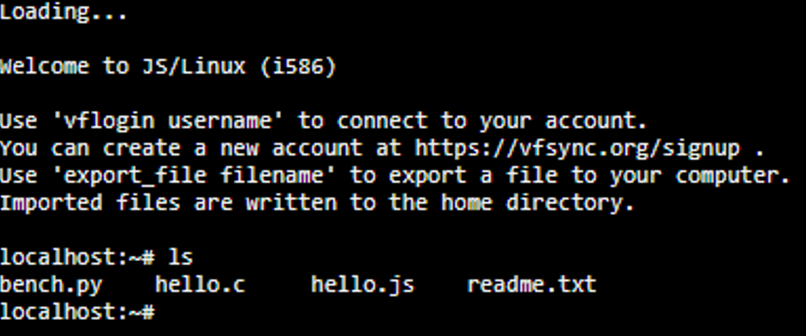
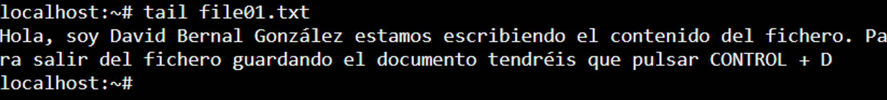
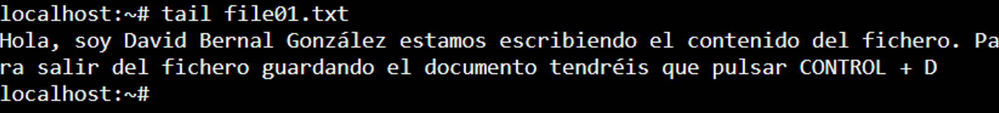
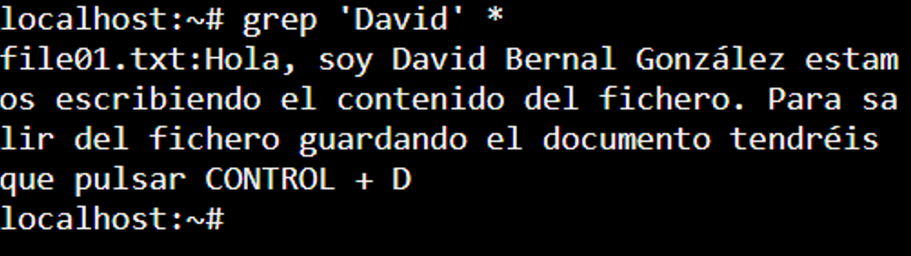
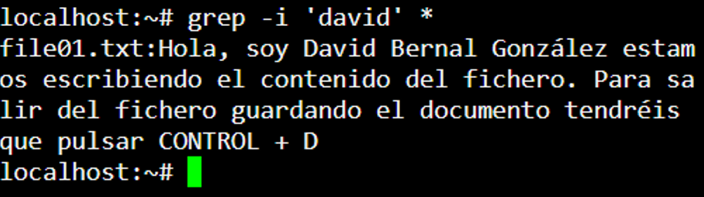
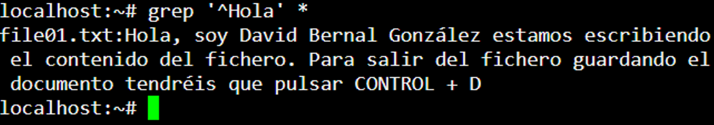
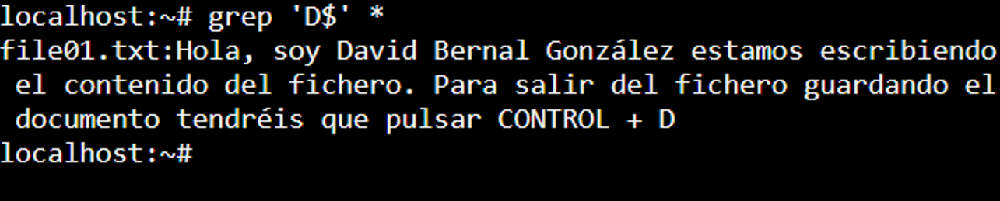

1. Introducción a las expresiones regulares 🔍
1.1 - ¿Qué son las expresiones regulares? 🤔
El término de expresiones regulares nace a partir del término inglés Regular Expressions, del que también surgen varias abreviaturas como RegEx (de REGular EXpressions) o RegExp (de REGular EXPressions).
🧠 Las expresiones regulares (RegEx), no son un lenguaje de programación, sino una serie de símbolos (expresiones o patrones) que nos permitirán definir patrones de búsqueda en cadenas de texto.
Por tanto, no son nada más y nada menos que una "especie de lenguaje" para manipular/realizar búsquedas sobre los archivos de texto o simplemente sobre textos sin la necesidad de que estos estén contenidos en el interior de un fichero.
1.2 - Historia y origen de las expresiones regulares 🕰️
Avances hasta la década de los 40 📜
La historia de las expresiones regulares se remonta a la década de 1940 y está estrechamente relacionada con los avances en la lógica matemática y la teoría de la computación.
🤖 El desarrollo de las expresiones regulares se basó en investigaciones previas sobre autómatas finitos y la formulación de lenguajes formales. Durante la década de 1930 y 1940, varios matemáticos y lógicos, incluyendo a Alonzo Church, Alan Turing, Emil Post y otros, estaban explorando los conceptos fundamentales de la teoría de la computación y la lógica matemática.
Pitts & McCulloch: creando la neurona de McCulloch - Pitts 🧠
El origen o los inicios de la creación de las expresiones regulres, tiene su origen en la neurociencia y no en la ciencia de la informática. Concretamente en 1943, en el estudio realizado por los padres de la neurona de Pitts & McCulloch.
Esta investigación fue plasmada en el documento "A Logical calculus of the ideas immanent in nervous activity" .
Los avances realizados en este estudio fueron utilizados a posteriori dentro del campo de la informática para en la idealización de las expresiones regulares.
Kleene la "estrella" del regex 🌟
En la década de 1950, el matemático y lógico estadounidense Stephen Cole Kleene introdujo el término "expresión regular" por primera vez dentro de su trabajo de investigación llamado "Representation of events in nerve nets and finite automata" en la que refleja sus investigaciones en teoría de autómatas y lenguajes formales.
🤖 Cuando hablamos de teoeía de autómatas, nos referimos a la rama de la informática teórica y las matemáticas que se centran en el estudio de modelos abstractos de máquinas o dispositivos que pueden realizar ciertas operaciones sobre cadenas de símbolos. La teoría de lenguajes formales estudia patrones de cadenas de símbolos y sus propiedades mediante gramáticas y autómatas, siendo fundamental en la comprensión y análisis de lenguajes de programación, procesamiento de texto y verificación de software.
Si nos fijamos, en la primera línea podemos ver que el proyecto se llama RAND y fue encargado por la U.S. AIR FORCE.
Las expresiones regulares son patrones textuales que describen conjuntos de cadenas de caracteres. Permiten la descripción y manipulación de lenguajes regulares, que son un tipo de lenguaje formal en la teoría de lenguajes formales.
Estas expresiones se utilizan en muchos contextos, incluyendo la búsqueda y manipulación de texto en editores de texto, procesamiento de cadenas en programación, y en el diseño de motores de búsqueda y sistemas de filtrado de información.
Kleene formalizó las expresiones regulares utilizando notación matemática y desarrolló métodos para analizar y generar patrones de texto utilizando estas expresiones.
Para ello, utilizó símbolos como "*" para denotar repetición y "+" para denotar al menos una repetición de un símbolo o grupo de símbolos en una expresión.
Estos símbolos y la notación matemática que desarrolló permitieron describir patrones de manera más concisa y precisa.
🤖 Con el tiempo, las expresiones regulares se convirtieron en un componente esencial en la programación y la manipulación de texto en sistemas informáticos. Se incorporaron en varios lenguajes de programación y herramientas, lo que permitió a los desarrolladores realizar tareas de búsqueda, extracción y manipulación de patrones de manera más eficiente. Desde entonces, las expresiones regulares han evolucionado y se han vuelto ubicuas en la informática y el procesamiento de datos.
Ken Thompson, finalmente implementa 💻
Durante los años 60, Ken Thompson, un científico de la computación que destaca por ser uno de los creadores del sistema operativo Unix, tuvo un papel muy significativo en la evolución y popularización de las expresiones regulares en el ámbito de la informática.
Aunque Stephen Cole Kleene introdujo el concepto de expresiones regulares en la teoría matemática, Ken Thompson fue quien llevó estas ideas a la práctica y las integró en el mundo de la programación y la informática práctica.
Thompson implementó las expresiones regulares dentro de un editor de texto llamado “ED” lo que permitía a los usuarios realizar operaciones con la finalidad de que los usuarios pudieran realizar ciertas operaciones de edición de texto utilizando expresiones regulares.
Aquí podemos ver el artículo "Regular Expression Search" escrito por el mismo Thompson para Bell Telephone Laboratories, en el que detalla aspectos sobre el algoritmo que utilizó para implementar las expresiones regulares dentro del editor de texto EQ.
🤖 Thompson realiza el hito que representa el punto de entrada de las expresiones regulares RegEx dentro de la informática.
🎓 Posteriormente, Thompson trabajando junto con Dennis Ritchie, desarrollaron el lenguaje de programación "grep" (que significa "global regular expression print"), que permitía buscar patrones en archivos y mostrar las líneas que coincidían con esas expresiones regulares. La utilidad "grep" se convirtió en una herramienta esencial en Unix y otros sistemas operativos basados en Unix.
Aunque las expresiones regulares han evolucionado a lo largo del tiempo, y en algunos aspectos nada tiene que ver con las de aquel entonces, tal y como podéis observar en el siguiente memorando escrito para Bells Labs en 1970 , algunas de las características de expresiones regulares de QED se siguen manteniendo a día de hoy después de tantos años.
Larry Wall implementa las expresiones por primera vez dentro de Perl 💡
Larry Wall, el creador del lenguaje Perl, introdujo expresiones regulares dentro del lenguaje.
Consiguiendo que las expresiones regulares fueran fáciles de usar y agregando características avanzadas como remplazos y capturas. También popularizó conceptos como "greediness" en las coincidencias.
📌 Sus contribuciones influyeron en cómo se usan las expresiones regulares en la programación.

1.3 - ¿Para qué sirven las expresiones regulares? 🎯
Las expresiones regulares son extremadamente útiles en determinadas situaciones donde necesitas realizar tareas de búsqueda y manipulación de texto de manera avanzada.
Algunos casos típicos en los que se utilizan expresiones regulares son:
- Búsqueda de patrones: Puedes buscar palabras específicas, números, fechas o cualquier patrón de caracteres en un texto de manera más flexible y eficiente que con una simple búsqueda de texto.
- Validación de datos: Puedes validar si una cadena cumple con un formato específico, como un número de teléfono, dirección de correo electrónico, código postal, etc.
- Extracción de información: Puedes extraer partes específicas de una cadena que cumplan con un patrón determinado, como obtener todos los enlaces de una página web o extraer datos estructurados de un texto.
- Reemplazo y manipulación de texto: Puedes realizar operaciones de reemplazo, eliminación o modificación de texto basado en patrones específicos.
Algunos ejemplos de todo esto podrían ser:
- El proceso de validar si un email tiene un formato correcto o no.
- Substituir cierta información dentro de un documento/archivo.
- Realizar una modificación masiva sobre múltiples INSERTs de SQL.
1.4 - Ejemplo de búsqueda de patrones con el comando grep y regexp 🔍
Una vez aterrizados en la historia y en las expresiones regulares, vamos a ver un pequeño ejemplo de cómo trabajar con ellas mediante al comando grep solamente disponible dentro de los sistemas operativos que están basados en UNIX.
¿Qué es GREP? ¿Para qué se utiliza? 💻
GREP es un comando de terminal que nos permite realizar búsquedas globales.
GREP es el acrónimo de Global Regular Expression Print el significado de estas siglas es el siguiente:
- G 🡢 Global
- RE 🡢 Regular Expressions
- P 🡢 Print
Con GREP, por tanto, vamos a realizar una búsqueda Global, es decir, sobre una serie de documentos situados en un directorio y finalmente vamos a hacer un Print (impresión) de todas las líneas coincidentes mediante a una Regular Expresion.
🔎 GREP destaca por ser un marcar un antes y un después, un gran paso en cómo realizar búsquedas en Unix.
Trabajando desde la web una terminal UNIX 🌐
Para realizar dicha prueba, vamos a trabajar desde una emulación web de un sistema UNIX.
Para ello, entramos en la siguiente web: Entra en la web.
Una vez dentro, seleccionamos el sistema operativo con el que queremos trabajar en mi caso usaré la siguiente versión:

Una vez dentro, como podréis observar, se nos abrirá una terminal de Linux en el propio browser desde el que podremos ejecutar los comandos pertinentes:

Creando el fichero a buscar 📂
Primeramente, vamos a hacer un ls (de list) para listar todos los ficheros actuales:
Posteriormente, creamos un fichero mediante el comando cat de la siguiente manera:
Escribimos 🡢 cat > (nombre del fichero)
En su interior, vamos a escribir el contenido sobre el que realizaremos la búsqueda con GREP.
Para salir del documento si queremos guardar los cambios utilizamos Ctrl + D, o si quisiéramos salir sin guardar el documento Ctrl + C.
Finalmente, una vez guardado el fichero, vamos a hacer un ls para mostrar si hemos creado el fichero correctamente.
Si ejecutamos el comando tail junto al nombre del fichero que acabamos de crear, podemos mostrar el contenido del fichero que acabamos de introducir en el paso anterior:
 

Ejemplo de uso de GREP 📋
Primer Ejemplo, finalmente, vamos a realizar la primera búsqueda de la expresión regexp más sencilla de todas, una palabra sin más. Para ello, tenemos que utilizar el comando grep junto a la expresión regular que vamos a buscar, en este caso la palabra David entrecomillada. E inmediatamente después, la ruta sobre la que queremos realizar la búsqueda.
📄 Para realizar una búsqueda global, es decir, sobre todos los directorios utilizamos *
Si realizamos la búsqueda con todos los caracteres en minúsculas, fijaros que la consola no imprimirá ningún resultado:

En cambio, si repetimos la misma operación con el nombre con la D en mayúscula, ahora si que podemos observar que nos devuelve el resultado correctamente:
Segundo Ejemplo, si queremos que la búsqueda no sea case-sensitive, es decir, a mayúsculas y minúsculas podemos añadir el flag (la bandera) -i. Vamos a verlo:
Tercer Ejemplo, Si quisiéramos buscar los ficheros que empiecen por Hola, haríamos lo siguiente:
Cuarto Ejemplo, Si quisiéramos buscar los ficheros que acaben por D haríamos lo siguiente:
1.5 - ¿Qué son los motores de ejecución de regexp? Y tipos engines de regexp 🚀
¿Qué son los motores de expresiones regulares? 🧩
Los motores (engines) de expresiones regulares, son programas o bibliotecas que implementan la capacidad de realizar procesamiento e interpretación de patrones de expresiones regulares.
Estos modelos permiten buscar, comparar y manipular texto basándose en patrones definidos por las expresiones regulares.
Distintos motores de expresiones regulares 🧰
Los motores de expresiones regulares se encuentran tanto en lenguajes de programación (como Java, Python, JavaScript, Perl, PHP, .NET, etc.) como herramientas de software (Eclipse, Visual Studio Code, etc.) e incluso en sistemas operativos.
🔧 Cada motor puede tener su propia sintaxis y características específicas para expresiones regulares, pero la idea general es la misma: utilizar patrones para realizar operaciones complejas en cadenas de texto.
Algunos de los principales motores para ejecutar expresiones regulares son:
-
Oniguruma 🡢 Es un motor de expresiones regulares ampliamente
utilizado que se encuentra en Visual Studio Code, TextMate, Ruby,
PHP y otros.
Es conocido por su soporte completo de expresiones regulares con muchas características y extensiones. -
Java (java.util.regexp) 🡢 Proporciona java.util.regex, un
paquete/librería que contiene un conjunto de clases que nos va a
proporcionar un motor de expresiones regulares para trabajar con
expresiones regulares dentro de Java. Entre las clases más
utilizadas se encuentra Pattern y Matcher.
Estas clases permiten compilar expresiones regulares, buscar coincidencias y realizar operaciones de reemplazo en cadenas. - JavaScript (Regexp) 🡢 Los navegadores y Node.js utilizan el motor de expresiones regulares incorporado en JavaScript, que se accede a través de la clase RegExp. Por lo que podemos utilizar expresiones regulares de forma nativa en JavaScript para realizar búsquedas y reemplazos en cadenas de texto.
- GNU Grep (grep) 🡢 grep es una herramienta de línea de comandos disponible en sistemas Unix como por ejemplo Linux, que nos permite realizar búsquedas de patrones utilizando expresiones regulares.
- PCRE (Perl Compatible Regular Expressions) 🡢 PCRE es un motor de expresiones regulares compatible con Perl, que además se utiliza en lenguajes como PHP, Python (a través del módulo re), y otros. Ofrece una amplia gama de funcionalidades, incluyendo expresiones regulares recursivas.
- PHP (PCRE) 🡢 PHP utiliza el motor PCRE para su soporte de expresiones regulares. Puedes utilizar la función preg_match() y otras funciones relacionadas para trabajar con expresiones regulares.
- Ruby (Regexp) 🡢 Ruby proporciona soporte nativo para expresiones regulares a través de la clase Regexp.
- C# (.NET Regex) 🡢 C# proporciona soporte para expresiones regulares a través de la clase System.Text.RegularExpressions.Regex.
- Python (re) 🡢 Python incluye un módulo llamado re que ofrece soporte para expresiones regulares. Este módulo proporciona funciones para trabajar con expresiones regulares que nos permitirán compilar expresiones regexp, buscar coincidencias y realizar cambios de manera similar a Java.
ℹ Estos son solo algunos ejemplos de los motores de expresiones regulares disponibles en diferentes lenguajes y herramientas. Cada uno de ellos puede tener diferencias en la sintaxis o en las características admitidas, pero todos están diseñados para proporcionar una forma poderosa de realizar operaciones avanzadas de búsqueda y manipulación de texto basadas en patrones.
1.6 - ¿Qué es el patrón/pattern y el match? 🎯
¿Qué es el patrón, pattern? 🧩
Cuando hablamos de patrón o de pattern, dentro del contexto de las expresiones regulares, es a la expresión, es decir, la secuencia de caracteres mediante la cual intentaremos realizar un match dentro de un fichero gracias a un motor de expresiones regulares.
🧐 Cada carácter definido dentro del patrón representa una instrucción para buscar cierto tipo de contenido en el texto. Por tanto, el patrón no es nada más que una combinación de caracteres literales y caracteres especiales que tienen ciertos significados específicos. Los cuales formarán la expresión regular a partir de la cual buscaremos las coincidencias (matchings) dentro de un texto. Dicho patrón que buscará si una determinada expresión regular existe dentro de un determinado texto.
¿Qué es el match (coincidencia)? ✅
En el contexto de las expresiones regulares un match, se refiere a cada una de las instancias/coincidencias encontradas dentro del texto que cumple con lo definido dentro del patrón de la expresión regular.
En otras palabras, cuando aplicas una expresión regular, es decir, un patrón generando una cadena de texto, y esa cadena de texto buscará en el interior de un texto de tal forma que, cada resultado encontrado será una coincidencia o un "match".
📌^\d{3} 🡢 Este patrón significa que selecciona todas las líneas que empiecen por 3 dígitos.
En resumen, el patrón en una expresión regular define cómo se busca o manipula el texto. Contiene una serie de caracteres que representan reglas específicas para encontrar patrones particulares en las cadenas de texto.
Instalando plugins para VSC ⚙️
Existen determinadas expresiones regulares que pueden llegar a ser muy complejas y cuya lectura puede ser todo un reto.
Un ejemplo de ello es General Email Regex (RFC 5322 Official Standard) la cual nos permite realizar la validación de un email con un 99,99% de eficiencia:
>(?:[a-z0-9!#$%&'*+/=?^_`{|}~-]+(?:\.[a-z0-9!#$%&'*+/=?^_`{|}~-]+)*|" (?:[\x01-\x08\x0b\x0c\x0e-\x1f\x21\x23-\x5b\x5d-\x7f]|\\[\x01-\x09\x0b \x0c\x0e-\x7f])*")@(?:(?:[a-z0-9](?:[a-z0-9-]*[a-z0-9])?\.)+[a-z0-9](?: [a-z0-9-]*[a-z0-9])?|\[(?:(?:25[0-5]|2[0-4][0-9]|[01]?[0-9][0-9]?)\.){3} (?:25[0-5]|2[0-4][0-9]|[01]?[0-9][0-9]?|[a-z0-9-]*[a-z0-9]:(?:[\x01-\x08\ x0b\x0c\x0e-\x1f\x21-\x5a\x53-\x7f]|\\[\x01-\x09\x0b\x0c\x0e-\x7f])+)\])
Si tenemos que interpretar dicha expresión sin ayuda alguna, esto sería una tarea muy muy muy compleja.
Por ello, tenemos determinadas web y plugins que nos permiten simplificar en media de lo posible determinadas tareas con regexp. Un ejemplo de ello es la siguiente web: Enlace de web
🏗 Si pegamos el código de la expresión regular podemos generar un esquema que nos permitirá entender que hace la expresión.